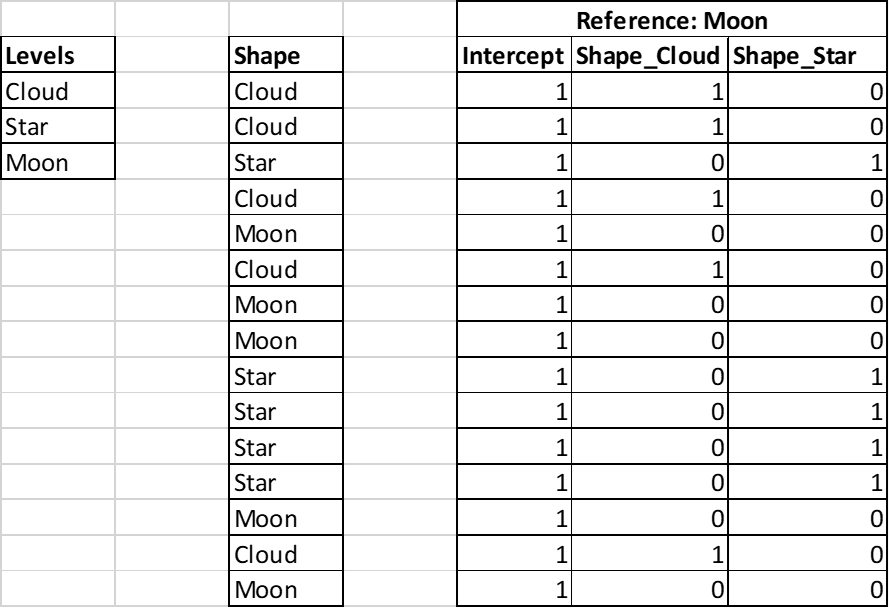

Data Exploration
Meta data
Data set information
Meta data refers to information (data) about the data set itself. In data science, this usually includes
Its origin and/or source, if possible, the first one (not only the web page from which it was retieved).
Its dates of creation and/or retrieval.
Its name and/or title.
Its file type (csv, xlxs, etc.).
Its shape and a general description of its content (each column for tabular data).
E.g., see ?bank in the package liver.
Data Expolration
EDA
EDA stands for Exploratory Data Analysis. It is not optional! Aims:
Know the data: e.g., number of modalities for categorical variables, data length, number of missing values, etc.
Be informed of their general behavior: modality proportions, location and dispersion of numerical variables, etc.
Detect any outliers or special modes.
Inspect some of the data relationships.
There exist endless possibilities of EDA. A range of classical and efficient methods is presented below.
EDA strategy
Without prior knowledge of the case:
One by one: univariate analysis.
By pairs: bivariate analysis.
More variables if needed and/or possible.
For univariate analysis (one variable):
Graphical:
Categorical variables: barplot and stacked barplot
Numerical variables: boxplot, violin plot, and histogram.
Numerical:
Categorical variables: frequencies and proportions,
Numerical variables: locations (mean, median, min, max), dispersions (standard deviation, IQR, range), quantiles (\(0.25, 0.75\)),
Both: number of observations, number of missing values.
For bivariate analysis (two variables):
Graphical:
cat*cat: barplots, mosaic plots
cat*num: boxplots or histograms of num per modality of cat
num*num: scatterplot
Numerical:
cat*cat: table of frequencies or proportions
cat*num: statistics of num per modality of cat
num*num: correlation
Exploratory tools
For more than two variables this mainly depends on the objective. The complexity increases fast and no universal method exists. Consider
cat*cat*cat: Sankey diagram.
num*num*num: parallel coordinates.
num*num*cat: scatterplot (num*num) with colors or shapes (cat).
cat*cat*num: can turn num into cat (intervals) or can make cat*cat = cat (combine modalities).
Data transformation
Numerical variables
Many possibilities. Consider,
Univariate: \(x^2\), \(\ln(x)\), \(\ln(1+x)\), \(|x|\), \(1/x\), ranks, etc.
Multivariate: \(x_1 x_2\), \(x_1 + x_2\), etc.
Num to ordinal: categorize \(x\) by intervals.
Applying any transformation must be guided by the aim of the study (e.g., use \(\ln(1+x)\) on the outcome \(x\geq 0\)).
Categorical variables
Many possibilities. Consider,
Turn ordinal into num (1, 2, 3, etc.).
Diminish the number of modalities if too many: e.g., A, B, C covers \(80\%\) of the cases. Create a category “other” for the rest.
Create dummy variables.
Dummy variables
ML algorithms perform mathematical operations on the data. They require numbers and cannot be performed on categorical data (characters, strings, etc.). These are then represented as dummy variables.
Most functions in R handle these representations automatically. However, it is not always the case in Python or in other computer programs. In any cases, it is important to know what is being the scene and how to represent categorical variables as dummy variables.
Dummy variable
Transform a categorical variable into several numerical variables:
One modality is the reference (choice of the user).
For the other modalities: \(0/1\) variables, one per modality.
Value is 1 if the modality is the same as the modality of the dummy variable, 0 otherwise.
Note: one variable, called intercept1, made of 1’s, is added.
A variable indicates a shape. It has three levels Cloud, Moon, and Star. The reference level below is Cloud. Below, 15 instances.
Dummy variable example
The same example when the reference level below is Moon.

Missing values
Missing value analysis is never easy and would deserve a whole course. In a quick fix, consider
Detect: which variables, which code (e.g.,
NA, \(-999\), etc.).Quantify: how many (number and proportion) for variables and cases.
Relate: two (or more) variables are systematically missing together?
In absence of data, lot of techniques break down. Can this be solved perfectly? No.
Dealing with (without) missing values
Various techniques, none of which is perfect:
Remove the cases with at least one missing feature.
Remove the feature with too many missing values.
Input the missing value.
Remove cases
Pro:
- Very simple and systematic
Cons:
Can leave no data: e.g., one variable is \(99\%\) systematically missing.
Can bias the analysis: e.g., missing is linked to the outcome (NMAR)
Remove features
Pro:
- if most of the missing values are concentrated in one feature, then it saves lot of cases.
Cons:
- Can leave out important information.
Consider also replacing the feature by indicator “0/1” for missing or not.
Imputation
Naive: per feature, replace NA by average or median (num), or the most frequent modality (cat).
Pro: None.
Cons: Avoid if possible (even if it is often used).
Model based: use the other features to predict the missing one (case by case).
Pro: Use all the available information.
Cons: Incorrectly diminish the noise in the data which enforce the correlation and give a wrong impression of certainty.
More advanced methods: repeated random imputation, EM algorithm, etc.
Outliers
Definition
Behind the term outlier hides lots of ideas. It can be (non-exhaustive)
An impossible value: exceeding physical limits.
An extreme value of a feature: possible but out of some predefined bounds.
An unlikely value: unlikely given the other features.
The second case is limited to numerical features. The two others can be categorical features.
Detection
For the three previous cases, consider
Often easy to detect from prior information. E.g., negative surface in a real estate data study, time exceeding 1 hour in a 1-hour observation study, etc.
Use boxplot to point them: values beyond \(1.5\) IQR from the quartile. E.g., age of 101 years when the other largest observed is 35 years.
Complex: use prior knowledge or a model. E.g., a room used for an RMI in a hospital for a specific diagnostic for which this room is never used, a yearly wage greater than \(\$1'000'000\) for a job in manufacturing.
Discussion
With outliers, things are never simple and automatic removal is often a bad idea. In an ideal world, only errors should be removed. Consider,
Check the facts: how many (if only one then it could be removed safely), where, which features?
Inquiry how the data were gathered: e.g., \(5\%\) of the revenues are negative. Did you consider possible that the revenue could indeed be negative in that study?
If set aside then document it. This should never be hidden.
In some situation, outliers are of interest: e.g., fraud analytics.
Further words
Further words
Analyze all variables systematically (univariate).
Bivariate can be too complex. Select the intersting ones (e.g., in supervised learning, outcome vs other).
Multivariate analysis be selective.
Common fallacies:
Use too many modalities in a categorical variable.
Compute correlations between dummy variables.
Use missing value indicator as a number (e.g., -999).
Transformations are not neutral. They influence the final conclusion. They must be taken into account and transparent.
Think that EDA is a one way through. It is a recursive/trial-and-error process (not unusual \(90\%\) of the work…)
Footnotes
In most algorithm, especially in regressions. In Neural Network, it is called the bias.↩︎